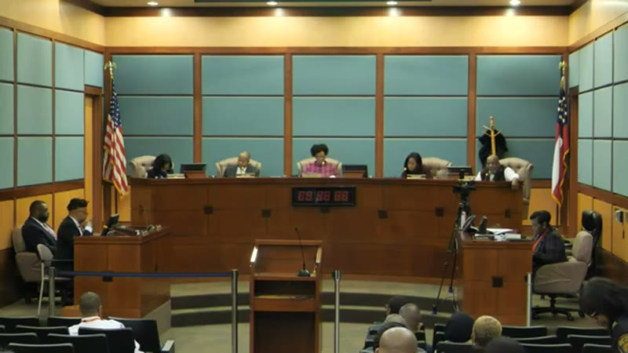
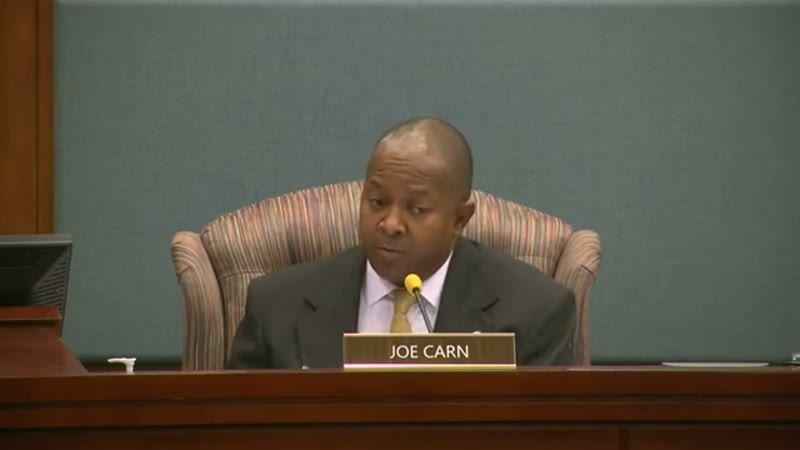
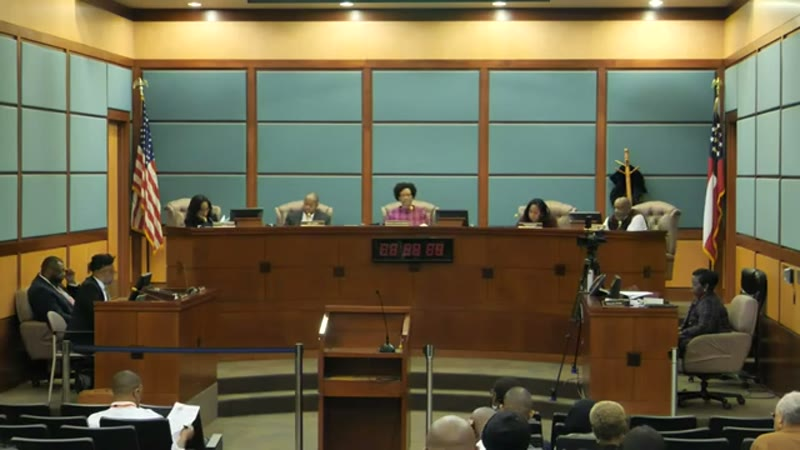
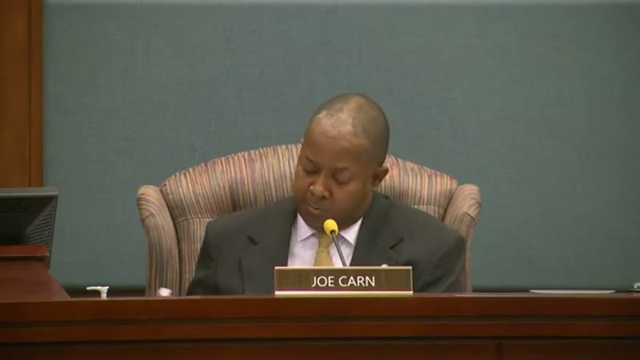
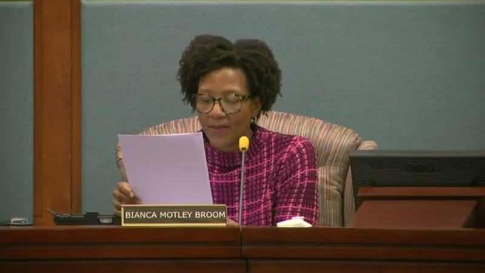

On their first night, fourteen changes to how the city governs itself — in one vote.
The council elected the previous year takes its seats this month, and at its first meeting moves fourteen motions as a single item. By Councilman Carn's own account it was not in the packet; it was added on that night. Mayor Bianca says she has not seen it either, and asks for what any ordinary motion gets: a second and a vote on each one. She is told no. She then asks the city attorney whether it is proper to bundle them, and names the motion she says changes the form of government — the council giving itself power over firing city employees. Carn answers in the attorney's place. The attorney never speaks. Eleven seconds into the reading, Mayor Bianca is barred from commenting on anything the council debates.

Mayor Bianca is not objecting to the content yet — she is asking for the ordinary process, a second and a vote on each motion. Note what she says about public notice. None of this was published, and she is holding them to a transparency value the council itself had adopted weeks before.
“I did not have the benefit of receiving these ahead of the meeting. I note there are 14 motions. Normally with a motion there are individual seconds after a motion is made, and then a vote, so I'm hoping that's the intent. The Mayor and Council recently approved as one of our core values transparency. So I hope it's the intent with these, since they didn't get any public notice, that not only will they be read but that they will be acted upon in accordance with the way this document is structured — individually.”Mayor Bianca Motley Broom, asking for fourteen separate votes · January 2, 2024
What it costs youOne vote, so no resident can see which councilmember backed which change. Watch the four clips in order: an ordinary request refused, a legal question left hanging, and the restriction passing anyway.

“This item is going to be voted on as one single consent agenda item. Now, of course, we read the items individually, but we're going to vote on them all together. Not going to do 14 votes or whatever.”Councilman Joe CarnOpen on YouTube at 1:26:08 ↗
Carn answers her directly. The reading will be item by item; the vote will not be. That distinction is the whole design — the public hears fourteen things, the record shows one decision.

“It seems to me that this is very diverse subjects. Some seem to suggest rules and procedures for conducting a meeting, but then there are others that I would suggest effect changes [to] the form of government — such as the item that deals with the council having the ability to determine terminations of city employees. So I will tell you, if that's voted on along with other more procedural items, I have deep concerns.”Mayor Bianca Motley Broom, to City Attorney Winston DenmarkOpen on YouTube at 1:27:08 ↗
She turns to the lawyer because she knows the bundling is the problem, and she points at the one motion that proves it. This is her trying to stop it through the process rather than by objecting after the fact.

My understanding is that there's nothing in here that's a substantial change to form of government at all.I disagree.Well, that's why we have a city attorney.[reading] I'm reading them all, sir. We're doing them collectively, we're voting collectively.Councilman Joe Carn, then Mayor Bianca, then Carn againOpen on YouTube at 1:27:33 ↗
Watch who answers. She asked the city attorney a legal question; Carn responds instead, and the attorney never speaks. She says she disagrees, Carn says that's why we have a city attorney, and the reading starts anyway. The question stays open to this day.

“While presiding over the deliberations of the city council in accordance with the charter, the mayor shall be prohibited from commenting or expressing opinions on the matters being discussed.”Read into the record as motion threeOpen on YouTube at 1:28:37 ↗
Now you know what was inside the bundle she was trying to slow down. Motion three arrives in the middle of a list, read at the same pace as the rest, and it removes her voice from every debate that follows.